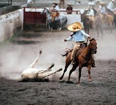
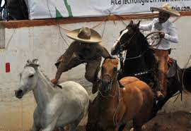
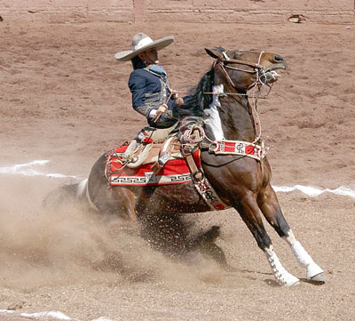

CHARRERIA
Montserrat Barragan Salas
¿Qué es la Charreria?
La Charreada es la fiesta más mexicana y más tradicional en México. A la Charreada algunas veces también se le llama Jaripeo. La Charreada se efectúa en sus escenarios propios llamados lienzos charros. Aquí es donde acude un extenso público para apreciar las llamadas suertes charras y también para dar apoyo a sus partidarios. Y como en todas las charreadas no puede faltar un Tamborazo o una Banda que al compás de su música llene de alegría al público y a los competidores de cada asociación charra.
Montserrat Barragan Salas
Historia
La historia de la Charrería comienza en el tiempo de la conquista cuando los españoles otorgaban encomiendas y mercedes que consistían en el otorgamiento de tierras y la consignación de un grupo de indígenas a un español (encomendero) quien tenía derecho de recibir tributo de los indios a cambio de doctrina y protección. Las mercedes de tierra fueron destinadas a la agricultura, minería y ganadería. Poco después se introdujeron diferentes especies de ganado. El primero en hacerse presente fue el ganado equino. Este se convirtió en un elemento muy útil en esa época ya que era necesario para viajar y para realizar los deberes del encomendero. Después del ganado equino fueron pasando a Nueva España el ganado bovino, porcino y lanar. En el siglo XVI fue tal el desarrollo de la ganadería que se crearon organizaciones para reglamentarla (mesta). La mesta decía que se debía hacer un rodeo semanalmente de ganado vacuno y caballar para así separar las reses mezcladas Las ocupaciones campiranas no eran fáciles de llevarse a cabo ya que se necesitaba destreza para realizar los herraderos, tusaderos o el rodeo, que en esa época solo tenia el objetivo de reunir el ganado. Debido a las necesidades y actividades propias del campo se extendió el uso de caballos sin distinción de castas y debido a esto surgieron los antecedentes de La Charrería: es decir, cuando se realizaban las faenas de herrar, capar, curar y tusa.
Montserrat Barragan Salas
Escaramuzas
Se conoce como Escaramuza Charra a la práctica femenil dentro del deporte de la Charrería y consiste en evoluciones coreografiadas a caballo con música de fondo.
Aunque la charrería es el deporte nacional de México, hay equipos de Charros y Escaramuzas en los Estados Unidos y Canadá.
INTEGRANTES
Los equipos de escaramuzas no tienen un numero específico de integrantes, pero generalmente se conforma por 8 integrantes; cuando son monumentales pueden ser mas de 8. Sin embargo, cuando participan en torneos tiene que cumplir un reglamento, que al igual que a los Charros les permite participar en el torneo. Cada integrante en competencia oficial debe estar federada, es decir, debe formar parte de la Federación mexicana de Charrería.1
Las integrantes de las escaramuzas, deben presentarse atuendadas, siguiendo el reglamento, iguales entre las 8, tanto ellas como la montura y los respectivos arreos de los caballos. Los vestidos pueden variar en el color en parejas, cuartetos o individual.
El entrenamiento tanto de las escaramuzas charras es muy intenso, ya que deben poder controlar su caballos con suma pericia, ya que su evoluciones requieren una perfecta coordinación entre todas las integrantes de un mismo equipo.
Montserrat Barragan Salas